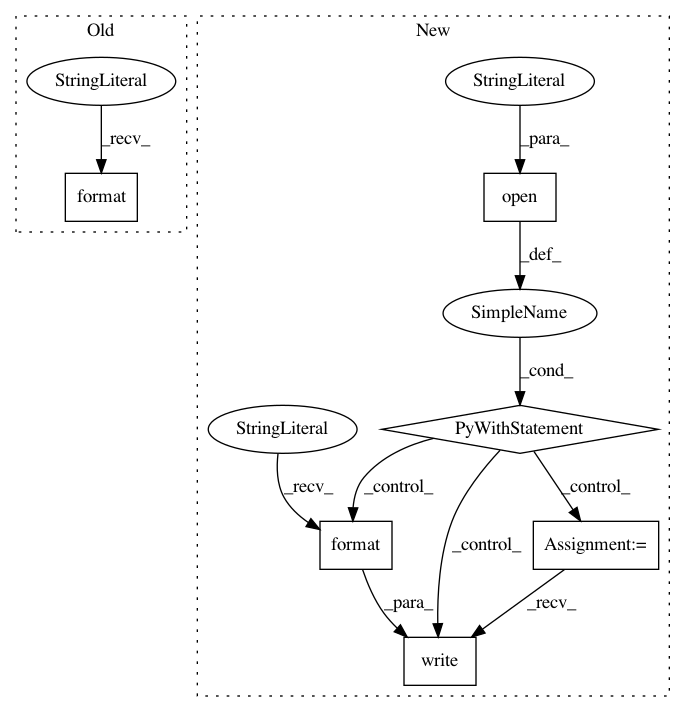

fc120ef964f978d4c8edc2102e11766937fe4173,hicexplorer/hicHyperoptDetectLoopsHiCCUPS.py,,main,#Any#,106
Before Change
best = fmin(objective, space, algo=tpe.suggest, max_evals=100, trials=trials)
// print(best)
print("best {}".format(best))
print("trails.result {}".format(trials.results))
print(space_eval(space, best))
After Change
print(space_eval(space, best))
with open(args.outputFileName, "w") as file:
file.write("// Created by HiCExplorer hicHyperoptDetectLoopsHiCCUPS {}\n\n".format(__version__))
file.write("{}".format(space_eval(space, best)))
In pattern: SUPERPATTERN
Frequency: 3
Non-data size: 6
Instances
Project Name: deeptools/HiCExplorer
Commit Name: fc120ef964f978d4c8edc2102e11766937fe4173
Time: 2020-05-18
Author: wolffj@informatik.uni-freiburg.de
File Name: hicexplorer/hicHyperoptDetectLoopsHiCCUPS.py
Class Name:
Method Name: main
Project Name: deeptools/HiCExplorer
Commit Name: fc120ef964f978d4c8edc2102e11766937fe4173
Time: 2020-05-18
Author: wolffj@informatik.uni-freiburg.de
File Name: hicexplorer/hicHyperoptDetectLoops.py
Class Name:
Method Name: main
Project Name: NeuromorphicProcessorProject/snn_toolbox
Commit Name: d933ed8ebfbfd1dbdc256e4b39c10d184c5f1abf
Time: 2016-06-30
Author: bodo.rueckauer@gmail.com
File Name: snntoolbox/target_simulators/INI_target_sim.py
Class Name: SNN_compiled
Method Name: run